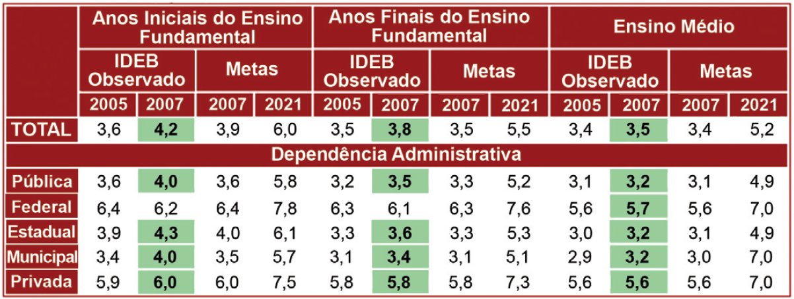

Leia a tabela que apresenta dados do Índice de Desenvolvimento
da Educação Básica – Ideb.
IDEB 2005, 2007 e Projeções para o BRASIL

Saeb e Censo Escolar
Disponível em: http://www.inep.gov.br. Acesso em set. 2008.
Qual das afirmações faz uma análise coerente entre os
dados da tabela e os fatores do Ideb?
-
Os dados sobre aprovação escolar e as médias totais de
desempenho no Saeb e na Prova Brasil resultaram em
índices que ultrapassaram as metas para o ensino fundamental
em 2007.
-
Os índices observados no ano de 2007, mais elevados
quanto maior a escolaridade, são ferramentas para o
acompanhamento das metas de qualidade do Plano de
Desenvolvimento da Educação.
-
O Ideb, que reúne, em um indicador, o fluxo escolar e as
médias de desempenho nas avaliações, foi, no total de
2007, inferior à meta para o mesmo ano.
-
A superação das metas no ensino fundamental e no ensino
médio foi um avanço, levando-se em consideração que
a escala do Ideb vai de zero a seis.
-
A expectativa de avanço nas escolas estaduais é inferior
àquela esperada para as escolas municipais, uma vez
que o índice é comparável nacionalmente.